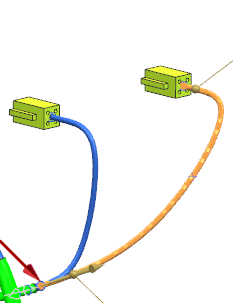
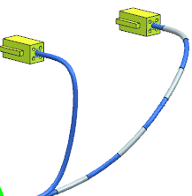

Assign sleeving to the selected segment using the Interval method
-
In the Application Method group, from the Method list, select Interval.
Additional value boxes appear in the Application Method group. Two round markers indicate the beginning and the end of the path.

-
You want the path start offset to be at the lower end away from the connector. If is not, click Reverse Direction
 .
.
This overstock is to begin 25mm away from where the segment branches from the rest of the harness, and end 10mm away from the back of the 4–pin connector.
-
In the Location list, make sure Arc Length is selected, then select the Lock check box next to it.
-
In the Start Offset box, type 25, and then 回车。
-
In the Location row below Start Offset, make sure Arc Length is selected, then select the Lock check box.
-
In the End Offset box, type 10, and then 回车。
-
In the Piece Length box, type 25, then select its Lock check box.
-
In the Number of Pieces row, type 4, and then 回车。
Since the Distance and Gap rows are not locked, NX automatically calculates their values for you.
-
点击确定。

Four pieces of equally spaced shrink sleeving are applied along the segment.
-
Close all parts without saving.